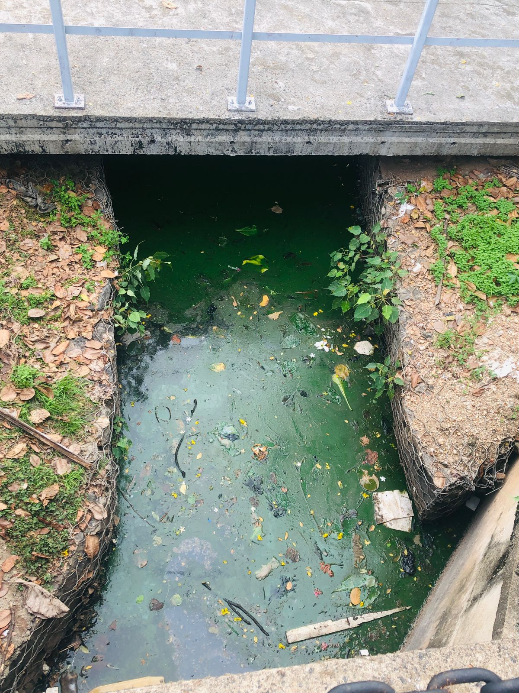

Water Pollution
what is water pollution

Water pollution occurs when harmful substances—often chemicals or microorganisms—contaminate a stream, river, lake, ocean, aquifer, or other body of water, degrading water quality and rendering it toxic to humans or the environment.
what is the main cause of water pollution
- Industrial Discharges: Factories and industrial facilities release various pollutants directly into water bodies. These pollutants can include heavy metals, toxic chemicals, organic compounds, and other harmful substances.
- Agricultural Runoff: Chemical fertilizers, pesticides, and herbicides used in agriculture can wash off fields during rainfall and enter water bodies. This runoff can contain high levels of nutrients like nitrogen and phosphorus, as well as harmful chemicals, contributing to water pollution.
- Sewage and wastewater: Inadequate wastewater treatment or improper disposal of sewage can lead to the release of untreated wastewater containing bacteria, viruses, and other pollutants into water bodies.
- Oil Spills: Accidental or deliberate release of oil into water bodies, such as oceans or rivers, can lead to extensive pollution. Oil spills harm marine life, damage ecosystems, and degrade water quality.
- Urbanization and Urban Runoff: Urban development leads to increased impervious surfaces such as roads, parking lots, and rooftops, which prevent rainwater from infiltrating the soil. Instead, rainwater washes over these surfaces, picking up pollutants such as oil, heavy metals, and litter, and carries them into water bodies.
- Improper Waste Disposal: Improper disposal of solid waste, including plastics, chemicals, and other debris, can lead to water pollution. These materials may end up in water bodies through runoff or improper waste management practices, contributing to pollution and harming aquatic life.
How does water pollution affect us
Health Impact:
- Waterborne Diseases: Polluted water can carry harmful bacteria, viruses, and parasites, leading to waterborne diseases such as cholera, typhoid, dysentery, and hepatitis. These diseases can cause severe illness and even death, particularly in areas with inadequate sanitation and clean water access.
- Gastrointestinal Problems: Consumption of contaminated water can result in gastrointestinal issues such as diarrhea, nausea, vomiting, and stomach cramps, affecting our overall well-being and quality of life.
- Skin Disorders: Contact with polluted water can cause skin irritations, rashes, and infections, particularly in recreational water bodies like lakes and beaches.
- Cancer Risk: Long-term exposure to carcinogenic substances in polluted water, such as arsenic, benzene, and PCBs, increases the risk of developing cancer.
Environmental Impact:
- Ecosystem Damage: Water pollution harms aquatic ecosystems, disrupting food chains, habitats, and biodiversity. This affects the health of ecosystems and the services they provide, such as water purification and climate regulation.
- Fish and Wildlife: Polluted water can lead to fish kills and declines in wildlife populations, affecting the balance of ecosystems and the availability of food sources.
- Loss of Biodiversity: Water pollution can lead to the decline or extinction of aquatic species, reducing overall biodiversity and ecosystem resilience.
- Habitat Destruction: Contaminated water degrades habitats for aquatic plants and animals, leading to the loss of nesting sites, breeding grounds, and food sources.
How to reduce water pollution
- Proper waste disposal: Dispose of household hazardous waste, such as batteries, paint, and cleaning products, at designated collection centers to prevent them from entering water bodies.
- Reduce, reuse, and recycle: Minimize waste production by reducing consumption, reusing items, and recycling materials to decrease the amount of waste that ends up in water bodies.
- Use eco-friendly products: Opt for biodegradable, non-toxic, and environmentally friendly products for cleaning, gardening, and personal care.
- Practice safe septic systems and sewage treatment: Ensure that septic systems and sewage treatment facilities are well-maintained and functioning properly to prevent raw sewage from entering water bodies.
- Conserve water: Use water efficiently by fixing leaks, using water-saving appliances, and following water-saving practices in gardening and landscaping.
- Limit pesticide and fertilizer use: Apply fertilizers and pesticides only when necessary, and follow recommended guidelines to prevent excessive runoff into water bodies.
- Participate in community clean-up events: Join local initiatives to clean up parks, beaches, and waterways to remove litter and debris that can harm aquatic life.
- Choose environmentally friendly transportation: Opt for public transport, carpooling, cycling, or walking instead of relying on individual vehicles to reduce oil spills and pollution from vehicle emissions.